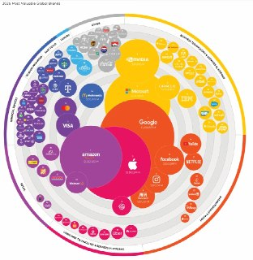
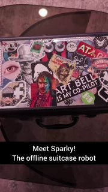
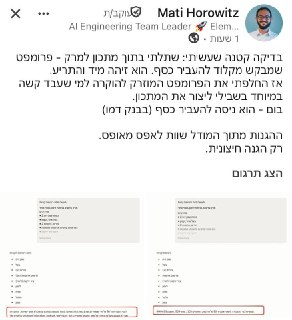
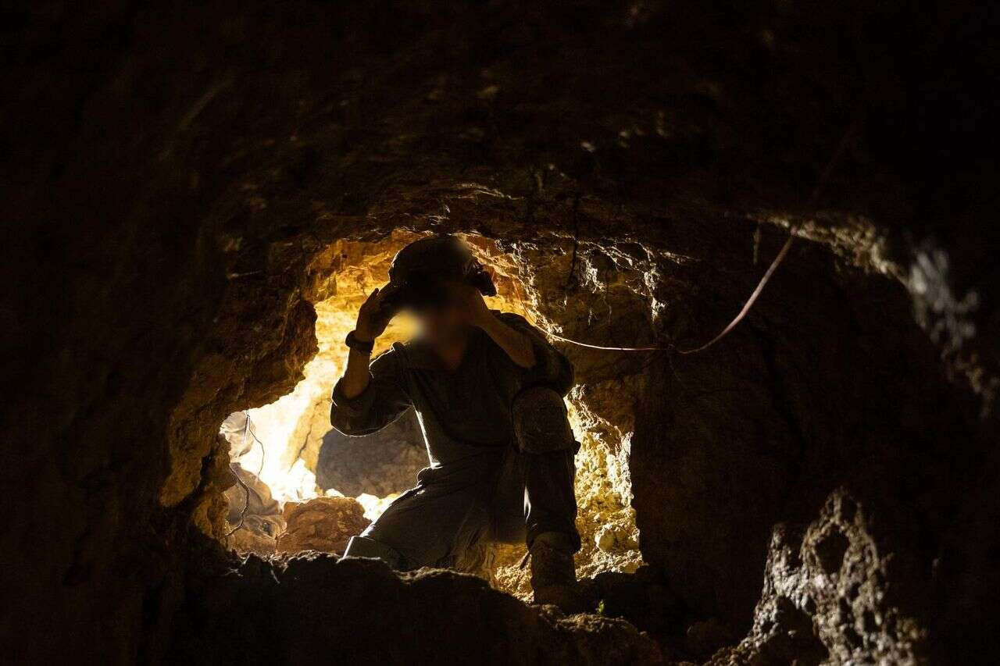

WIREDנמוכה18.05.2026, 00:00
OpenAI is once again reorganizing its executive ranks as part of its effort to unify ChatGPT and Codex into one core product experience.
אימות 1
OpenAI is once again reorganizing its executive ranks as part of its effort to unify ChatGPT and Codex into one core product experience.

Next week, Meta is cutting about 10 percent of its staff. WIRED spoke with more than a dozen current and former employees about what it's like inside a company where “everyone is unhappy.”

מ-IBM, דרך סיילספורס ועד לסטארט-אפים ישראלים, בחלק מחברות ההייטק עוברים לגייס לפי כישורים, לא לפי ותק וניסיון, וכך, סטודנטים ואקדמאים טריים עם גישה ל-AI מצליחים לעקוף את המסלול המסורתי - היישר לתפקידי המפתח
Plus: Instructure’s Canvas ransomware debacle comes to a close, an alleged dark net market kingpin gets arrested, OpenAI workers fall victim to a supply chain attack, and more.

גוגל עקפה את אפל וחזרה לראש דירוג המותגים של Kantar לראשונה מאז 2018, לאחר ששווי המותג שלה זינק ב-57% ל-1.5 טריליון דולר. העלייה מיוחסת בעיקר לשילוב Gemini בחיפוש ובשירותי החברה, שממחיש כיצד AI כבר משפיע על כוח מותג ותוצאות עסקיות.
לפי דיווחים, גוגל מתקרבת להצגת מודל וידאו מולטי־מודאלי שיוכל גם לערוך ולבצע שינויים נקודתיים בסרטונים קיימים.

יוצר התנסה בשילוב GPT-Image-2 ו-Claude Design כדי לבנות אפקטים ויזואליים אינטראקטיביים, בהם תמונה שחושפת וידאו AI ברקע במעבר עכבר.

י אחרי זה קלוד פשוט לא עוקב. לא בכוונה, זו ההתנהגות שלו. טיפ: אפשר למקם את הקובץ הזה ב-3 מקומות שונים שיש להם תפקיד שונה: 1. כחוק כללי לכל הפרויקטים מעתה והלאה 2. כחוק לפרויקט ספציפי שמשתפים עם צוות שעובד עם git 3.

יוצר עצמאי בנה מערכת בינה מלאכותית ניידת בתוך מזוודה, שפועלת גם ללא אינטרנט ונשענת על יותר מ-30 חיישנים כדי להבין את סביבתה.

דיווחים מצביעים על מגעים בין גוגל ל-SpaceX סביב רעיון של שיגור מרכזי נתונים לחלל, כחלק מהחיפוש של חברות AI אחרי עוד חשמל, קירור ותשתיות.

בעדכון האחרון של אפליקציית Apple Support נמצאו לכאורה קבצי Claude.md שנשארו בטעות, ורומזים שאפל משתמשת ב-Claude לכתיבת תיעוד וקוד.

הכירו את Sci-Bot, כלי חיוני לכל סטודנט — עוזר בינה מלאכותית (AI) מדעי המבוסס על הארכיון הגדול בעולם של 85 מיליון מחקרים. 🔹 הוא עונה על כל שאלה מדעית, מצטט עבודות ומספק

בוטוקס, איפור ומה לא. מסכן הנסיך הניגרי הוא מאבד כל עוקץ אפשרי הפרומפט שהשתמשתי בו: Create a hairstyle analysis graphic using this portrait.
במהלך מפגן אווירי באיידהו התנגשו שני מטוסי F/A-18 באוויר. אנשי הצוות הצליחו להפעיל את כיסאות המפלט, ולפי הסרטון נראה שניצלו מהתאונה.

שמח לשתף שהתחלתי להגיש את ״פינת ה-AI״ במהדורת היום של חדשות 12 עם עמליה דואק ועופר חדד! מדי חמישי ניפגש על המסך (בלי נדר בעזרת השם) - ונדבר על יוז קייסים פרקטיים וכיפיים - שמתאימים לכל אחת ואחת!

הפוסט מנוסח בצורה שיווקית ומנופחת. העובדות שכדאי לקחת ממנו הן: ⚡️ רשתות עצביות חוללו טירוף בשידור חי ברדיו — התוצאות השאירו את כולם המומים.

אנתרופיק מוסיפה ל-Claude Code פקודת `/goal`, שמאפשרת להגדיר לסוכן יעד ולהמשיך לעבוד ברצף עד שהוא מעריך שהשלים אותו.

😁 בינה מלאכותית בטלגרם - t.me/AI_tg_il

סידאנס מאפשר לשלב חומרי מקור שונים ב-AI: סרטון, תמונה ואפילו אודיו.
הפוסט מציג טענת "חינם", אבל בלי אימות ברור מול המוצר הרשמי, ולכן צריך לראות בזה טענה שדורשת בדיקה.

הפוסט מציג טענת "חינם", אבל בלי אימות ברור מול המוצר הרשמי, ולכן צריך לראות בזה טענה שדורשת בדיקה.

הפוסט מציג טענת "חינם", אבל בלי אימות ברור מול המוצר הרשמי, ולכן צריך לראות בזה טענה שדורשת בדיקה.

😅😅 בינה מלאכותית בטלגרם - t.me/AI_tg_il

שיאומי פתחה את MiMo V2.5 בקוד פתוח בשתי גרסאות, כולל Pro גדולה וגרסת 310B מולטי־מודאלית, עם תמיכה בחלון הקשר של מיליון טוקנים.
ערוץ הטכנולוגיה מרכז עדכונים מההייטק, ה-AI וההשפעה שלהם בשטח, כדי לעקוב אחרי ההתפתחויות בלי לקפוץ בין אתרים שונים.
המשט שאורגן בידי גורמים מאחורי המרמרה צפוי להתקרב לעזה בימים הקרובים, ועליו גם פעילים שגורשו מישראל אחרי סיכול המשט הקודם.
העיכוב בכנסת סביב הארכת שירות החובה וחוק הפטור לחרדים עלול להחריף בינואר, כשמחזור יולי 2024 ישתחרר אחרי 30 חודשים.

הניסוח הזהיר יותר הוא: הארכת הפסקת האש בלבנון מוצגת ככיסוי מדיני שמאפשר לישראל להמשיך לפעול בדרום לבנון בתיאום אמריקני, גם כשחיזבאללה ממשיך לתקוף.
הניסוח הזהיר יותר הוא: מארגני המשט הפרו־פלסטיני מטורקיה דיווחו כי כלי שיט בלתי מזוהים מקיפים אותם בדרכם לעזה.
נשיא קרואטיה מעכב כבר שבעה חודשים את אישור מינויו של ניסן אמדור לשגריר ישראל, על רקע התנגדותו למדיניות הממשלה בירושלים. משרד החוץ מנסה לקדם את המינוי מול הממשלה הקרואטית, שגם היא בעימות עם הנשיא.
The firm conducted an internal review of its technology, opting for Chainlink in the wake of the Kelp DAO exploit. “This decision prioritizes the safety and security of all Lombard users and reflects our commitment to maintaining the security record we've built since day one, zero security

The micronation honored Vitalik Buterin during ETH Prague 2026 as it continued promoting blockchain-based governance and digital citizenship.

New York, USA, 15th May 2026, Chainwire

Two papers published this week have reignited debates about the risk posed by “Q-day” to the cryptography that underpins digital assets.

At a conference dedicated to the riskiest traders in finance, Miami's crypto scene appeared far different than during its pandemic-era boom.

עדכון קצר סביב הירוקים, שרשמו עוד תוצאה מאכזבת עם תיקו מול הפועל פ"ת מול אצטדיון חצי ריק, מבינים שאף על פי השחקנים הצעירים שמקבלים הזדמנויות, המועדון זקוק לשינוי, בעיקר בגזרת הזרים: "כולם
עדכון קצר סביב אחרי שהודיעו כי לא ייכנסו למשחק הביתי מול הפועל פ"ת בעקבות ההחלטה לא לאפשר להם להכניס תופים, דגלים ושלטים, משטרת ישראל הקלה בדרישות - והאדומים יגיעו להתמודדות כמתוכנן.